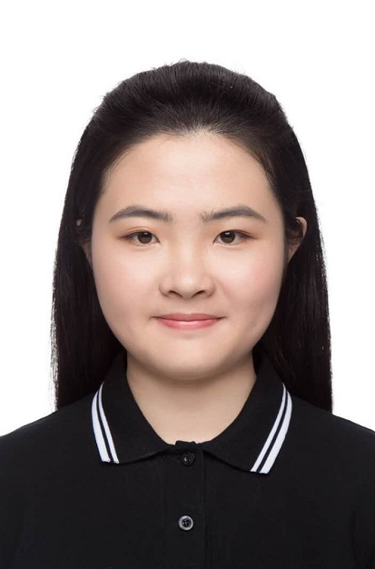

Di Xu
Research Intern at Airdoc
xudi@bupt.edu.cn |

|
I am now a master student and am applying for a PHD position. I am currently a part-time research intern at Airdoc and Monash University. My research insterests focus on Segmentation, Semi-supervised learning, Computer Vision, and Machine Learning. At present, I am working on Open Domain Adaptation problem in Medical Image Analysis.
Beijing University of Posts and Telecommunications - Department of Computer Science
Sep 2018 - Jun 2021
Master of Computer Science and Technology
Supervisors:
Prof Zhili Wang,
rof Wei Zheng and
Prof Xiaojing Gong
Beijing University of Posts and Telecommunications - Department of Computer Science
Sep 2013 - Jul 2017
Bachelor of Engineering in Process Equipment and Control Engineering
Supervisors:
Prof Xiaopeng Zhang,
Prof Dayong Zhang
Airdoc LLC (Beijing Tulip Partner Technology Co., Ltd)
Jun 2020 - Present
Research Intern
Monash University
Mar 2020 - Present
Research Intern
Shenzhen Institutes of Advanced Technology, Chinese Academy of Sciences
Jul 2017 - Jun 2020
Student (Research Assistant)
Dalian University of Technology
Jan 2014 - Jun 2017
Student (Research Assistant)
Recurrent Aggregation Learning for Multi-View Echocardiographic Sequences Segmentation
Ming Li, Weiwei Zhang, Guang Yang, Chengjia Wang, Heye Zhang, Huafeng Liu, Wei Zheng, Shuo Li
MICCAI 2019 11765:678-686.
[paper]
Unified model for interpreting multi-view echocardiographic sequences without temporal information
Ming Li, Shizhou Dong, Zhifan Gao, Cheng Feng, Huahua Xiong, Wei Zheng, Dhanjoo Ghista, Heye Zhang, Victor Hugo C. de Albuquerque
Applied Soft Computing 88 (2020):106049.
[paper]
MV-RAN: Multiview recurrent aggregation network for echocardiographic sequences segmentation and full cardiac cycle analysis
Ming Li, Chengjia Wang, Heye Zhang, Guang Yang
Computers in Biology and Medicine 120 (2020):103728.
[paper]
Holistic and Deep Feature Pyramids for Saliency Detection
Shizhong Dong, Zhifan Gao, Shanhui Sun, Xin Wang, Ming Li, Heye Zhang, Guang Yang, Huafeng Liu, Shuo Li
BMVC 2018 67.
[paper]
Open Domain Adaption
Mar 2020 - Present
On going... Try to diminish the domain gap among fundus images from different cameras.
Keratoconus Screening with Corneal Topography
Jun 2020 - Sep 2020
Evaluating corneal morphologic characteristics with corneal topographic scans before refractive surgery is necessary to exclude patients with at-risk corneas and keratoconus. In this research, a deep learning algorithm is used in combination with corneal topographic scans, achieving the screening of candidates for refractive surgery.
Echocardiographic Sequences Segmentation and Quantification
Mar 2018 - May 2020
Presented a recurrent aggregation learning mechanism for multi-view echocardiographic sequences segmentation. This work was published in MICCAI 2019.
Noninvasive Measurement of FFR from Phase-Contrast MRI
Jul 2017 - Mar 2018
Combined machine learning with computational fluid dynamics (CFD) simulations to achieve noninvasive measurement of fractional flow reserve (FFR). PC-MRI has the advantage of no ionizing radiation while machine learning can help reduce the computation complexity of CFD.
Removal of Mercury by Ce and Co Based Catalysts
May 2016 - Jun 2017
Different amounts of Co and Ce were loaded on KIT-6 by Triethoxyvinylsilane (C8H18O3Si) to synthesize Cox-Cey/KIT-6. The mesoporous structure and oxygen conversion ability of Cox-Cey/KIT-6 brought a high Hg0 removal efficiency.
Anti-ice Design of Offshore Jack-Up Drilling Rig
Jan 2014 - Apr 2015
The finite element method was utilized to analyze the anti-ice performance of different offshore jack-up drilling rig designs and optimize the design of legs of the offshore jack-up drilling rig.
Reviewer for: IEEE Transactions on Medical Imaging, WACV, CVPR
None
Programming Languages: Python, Java, PHP, C, C++, Matlab
Framework: PyTorch, TensorFlow, Keras
Tools: LaTeX, Linux, SVN, Git